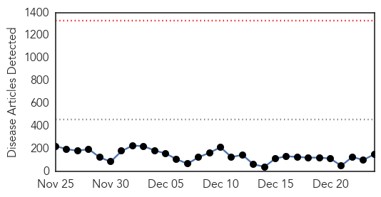

30 Day Trends
Web: 0 alerts, 0 warnings
Twitter: 0 alerts, 0 warnings
Top Articles:
- 1.000
- Ebola testing kit appoved by FDA
- 1.000
- The Ebola epidemic is slowing in Africa, but it's not yet controlled
- 1.000
- Health authorities report 3 new Ebola cases in Liberia, previously declared Ebola free
- 1.000
- Humanitarian Workers take no break
- 1.000
- the edge of knowledge
- 1.000
- Next in Ebola Plan: UN Teams to Study Lines of Transmission
- 1.000
- Christmas Just Another Day For Those Fighting Ebola In West Africa
- 1.000
- The Next Step For Fighting Ebola Is Detective Work
- 1.000
- Next in Ebola Plan: UN Teams to Study Lines of Transmission
- 1.000
- Up to a dozen U.S. scientists may have been exposed to Ebola sample at CDC lab in Atlanta
- 1.000
- Ebola crisis could last another year: expert Peter Piot
- 1.000
- Ebola: Fighting a deadly virus
- 1.000
- Ebola virus death toll reaches 7,565: WHO
- 0.999
- Ebola epidemic death toll rises to 7588 as virus spreads in Sierra Leone: WHO
- 0.999
- Death toll in Ebola outbreak rises to 7,588
- 0.999
- Passenger from Sierra Leone cleared of Ebola
- 0.999
- Christmas in Sierra Leone: a Long-Overdue Ebola Care Unit for Local Health Workers
- 0.999
- Ebola crisis could last through 2015 as marks year since outbreak
- 0.999
- CDC monitoring tech for possible Ebola exposure
- 0.999
- Latest Ebola outbreak profile shows varied patterns in 3 hard-hit nations
- 0.999
- Ebola crisis could last through 2015 as marks year since outbreak: Expert-TRFN
- 0.998
- Sierra Leone communities organize Ebola response
- 0.998
- Passenger from Sierra Leone cleared of Ebola
- 0.998
- Ebola crisis could last through 2015
- 0.997
- Lab tech possibly exposed to Ebola
- 0.997
- Sierra Leone bans Christmas parties amid Ebola
- 0.996
- Many states lag in ability to address disease oubreaks - Modern Healthcare Vital Signs
- 0.996
- CDC Lab Worker May Have Been Exposed To Ebola, Under Surveillance For 21 Days
- 0.996
- CDC technician may have been exposed to Ebola
- 0.996
- CDC monitoring tech for possible Ebola exposure
- 0.996
- CDC monitoring tech for possible Ebola exposure
- 0.996
- Ebola outbreak: CDC monitoring tech for possible exposure
- 0.996
- UPDATE 1-CDC worker monitored for possible Ebola exposure in lab error
- 0.996
- CDC worker monitored for possible Ebola exposure in lab error
- 0.996
- CDC director: Ebola remains virulent in parts of Africa
- 0.995
- Sierra Leone declares 5-day Ebola lockdown in north
- 0.995
- Why Does CDC Want To Keep 1,400 Possible Cases Of The Deadly Disease In The United States Hidden?
- 0.995
- Fear lingers in Mali despite no new Ebola cases
- 0.995
- Health ministry bans Church visits from Ebola countries
- 0.995
- CDC monitoring tech for possible Ebola exposure
- 0.995
- US worker exposed to Ebola after lab mishap
- 0.995
- CDC monitoring tech for possible Ebola exposure
- 0.995
- At Least Another Year of Ebola Ahead
- 0.995
- Sierra Leone declares five-day Ebola lockdown in north
- 0.995
- UPDATE 1-Death toll in Ebola outbreak rises to 7,588 - WHO
- 0.994
- Centers for Disease Control monitoring lab tech for possible Ebola exposure
- 0.994
- Local Liberian Communities Take Action
- 0.994
- CDC monitoring tech for possible Ebola exposure
- 0.994
- Ebola crisis: Centres for Disease Control (CDC) in US monitoring lab technician over possible exposure
- 0.994
- CDC monitoring tech for possible Ebola exposure
Showing top 50 articles...
Top Tweets:
- 0.958
- ha repartido antimaláricos a un millón de personas en SierraLeone ebolaresponse ebola http://t.co/wOlkhUPU3f
- 0.897
- A photographic look at a country-wide lockdown in Sierra Leone during the outbreak of the Ebola crisis via http://t.co/L1vEpbuxUX
- 0.840
- Imagine a disease wiping out 64,000 U.S. doctors. Now, you understand Ebola in Sierra Leone http://t.co/agNl4PZOgd
- 0.781
- RT: Talking CDC Ebola mishap on tonight at 630
- 0.734
- Ebola plays Scrooge on Sierra Leone's Christmas http://t.co/SYSkGmgRMT
- 0.707
- RT: BBC Newsbeat - Ebola outbreak: the West Africa you don't see http://t.co/aBWAnOzlnh
- 0.666
- RT: BioCryst Announces Study Results for BCX4430 in a Non-Human Primate Model of Ebola Virus Infection http://t.co/nm5YlhBvsQ
- 0.631
- RT: A Canadian water and sanitation expert helps the fight against Ebola in Sierra Leone http://t.co/391FZUjAE1
- 0.614
- RT: [DAILYMAIL] First conviction in Sierra Leone under Ebola laws http://t.co/XOmMyPWU4O EBOLANEWS
- 0.591
- Awesome! Ugandan doctor springs to action during Ebola outbreak, trains around 1k HCW and saves lives http://t.co/q2rI41hSjl
- 0.580
- RT: Ebola also kills indirectly by collapsing health services and economies, as shown by drop of surgery in SierraLeone: http…
- 0.573
- RT: The heroes we never hear much about.. Ebola health workers take a rest in eastern Sierra Leone. (Reuters/Baz Ratner) http:…
- 0.570
- A year after the first case of Ebola and many lessons later, the virus plods on http://t.co/OydMzwadwo
- 0.551
- CDC’s Dr. Inger Damon helped create a course to prep health workers to work in Ebola treatment units in W Africa. http://t.co/WcWDxiz0rj
Web/News Articles
Tweets

Article Locations

Article Confidences